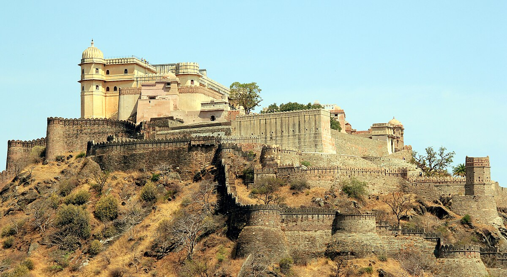
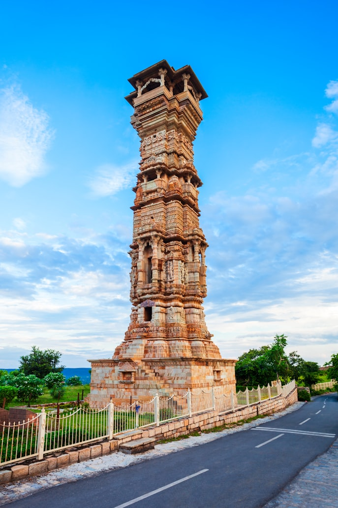
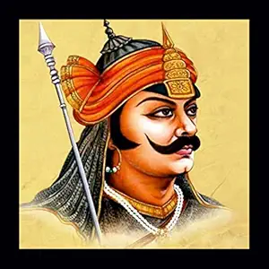
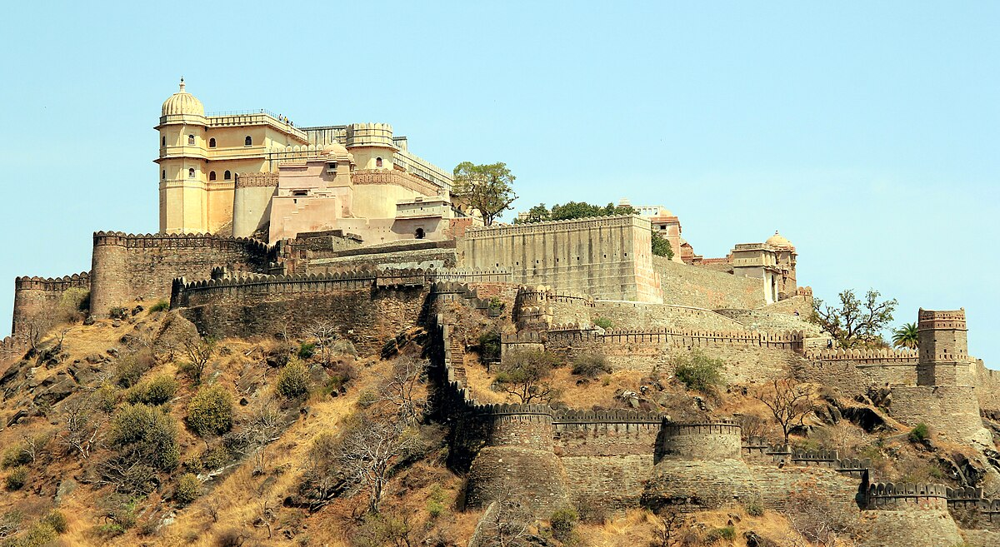
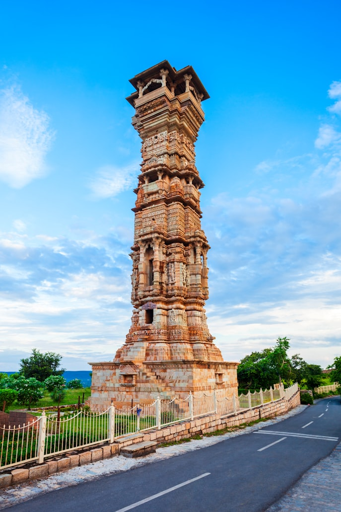
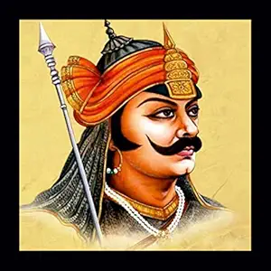

Maharana Pratap
1540-1597
A Warrior King who Lived and Died for freedom
Maharana Pratap was born on 9 May 1540 in Kumbhalgarh, Rajasthan. He was the son of Maharana Udai Singh II and Maharani Jaiwanta Bai. From a young age, Pratap was brought up in the rich traditions of Rajputana, learning the values of courage, honor, and loyalty. His upbringing focused on martial training, administration, and the importance of defending his kingdom. Immersed in the Rajput code of conduct, he developed a strong sense of duty, self-discipline, and devotion to his people, which guided him throughout his life.
Maharana Pratap was a legendary Rajput king and the ruler of Mewar, a kingdom in present-day Rajasthan, India. He is remembered for his extraordinary bravery, unwavering commitment to his people, and steadfast resistance against the Mughal emperor Akbar. Maharana Pratap devoted his life to defending Mewar’s independence, demonstrating remarkable courage, strategic skill, and a spirit of sacrifice that has inspired generations. His dedication to honor, valor, and freedom has made him an enduring symbol of Rajput pride and resilience.
One of the most significant events in Maharana Pratap’s life was the Battle of Haldighati in 1576, where he fought bravely against the Mughal army led by Raja Man Singh under Emperor Akbar. Despite being heavily outnumbered, Maharana Pratap displayed remarkable courage and determination to defend the independence of Mewar. His loyal horse, Chetak, played a crucial role in the battle and became a symbol of loyalty and valor, sacrificing its life while saving Maharana Pratap. After the battle, Pratap continued his resistance through guerilla warfare, employing hit-and-run tactics, surprise attacks, and deep knowledge of the terrain to challenge the Mughal forces, maintaining Mewar’s spirit of independence and resilience.
Maharana Pratap is remembered for his unwavering determination and refusal to surrender, despite facing immense hardships and scarcity during his lifetime. His relentless spirit of independence, courage, and sacrifice continues to inspire generations of Indians even today. Maharana Pratap’s dedication to honor and freedom has made him a symbol of Rajput valor and resilience. Every year, Maharana Pratap Jayanti is celebrated across India to honor his life, bravery, and enduring legacy.
A man who values his freedom will never surrender.
I would prefer to live in the jungles with freedom than in palaces with slavery.
Bravery and honor are the true jewels of a Rajput.
Maharana Pratab Gallary
 





Biographies
- Maharana Pratap: The Invincible Warrior" by Rima Hooja
- Maharana Pratap: A Biography" by Sri Ram Sharma
- Maharana Pratap: The Greatest Rajput Warrior" by Kesri Singh Mundiyar
- Maharana Pratap: A Rajput Hero, India's Pride
- Maharana Pratap: The Hero of Haldighati